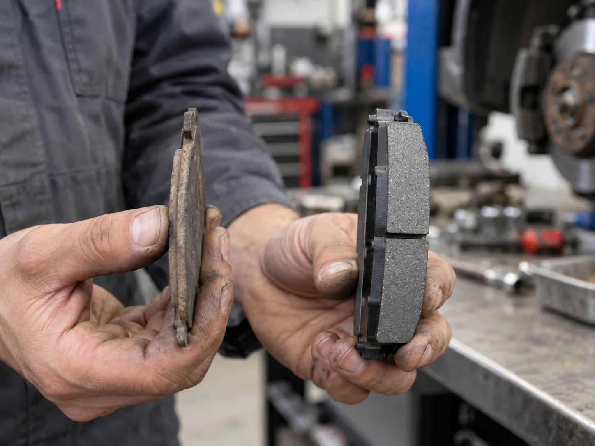
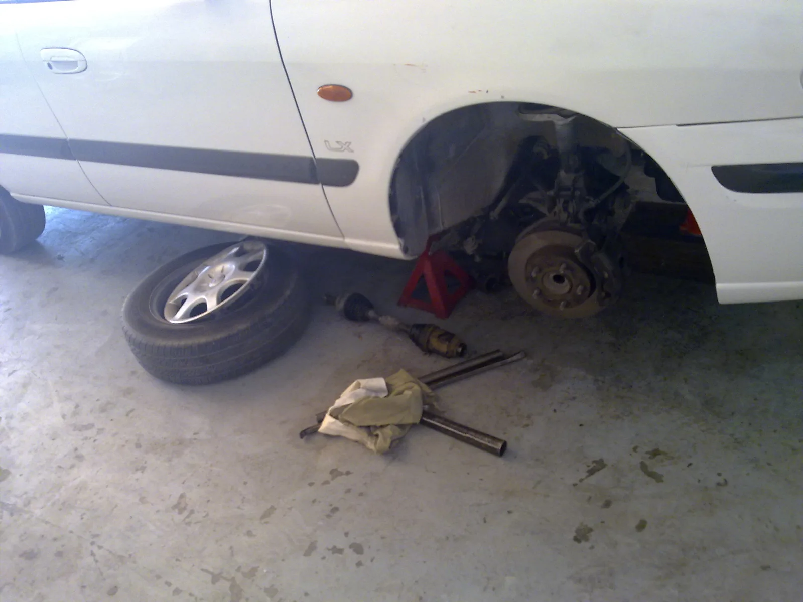
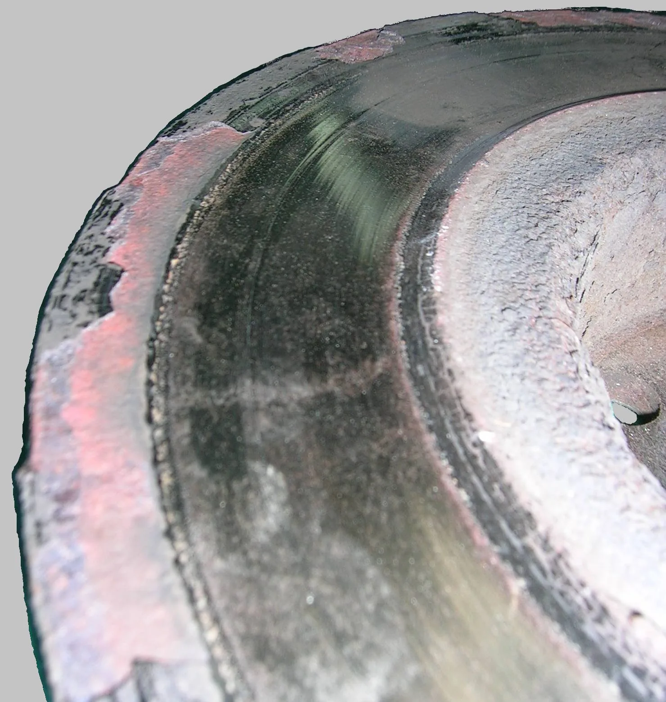
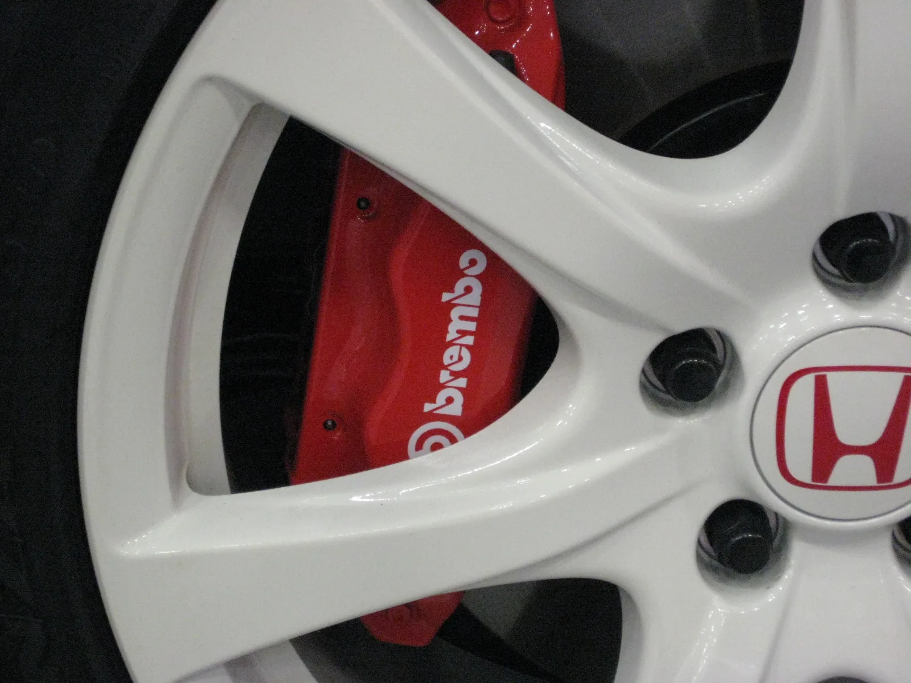

▲ 왼쪽처럼 마찰재가 거의 사라져 금속판이 드러난 상태라면 이미 교체 시기를 한참 지난 것이다 ⓒ CarPrism (AI 생성 이미지)
브레이크를 밟는 순간 "끼이익" 하는 쇳소리가 났다면, 그건 경고가 아니라 마지막 알림일 가능성이 높다. 대부분의 브레이크 패드에는 마모 한계에 다다르면 일부러 소리를 내도록 설계된 얇은 금속 조각(마모 인디케이터)이 붙어 있다. 이 소리가 들린다는 건 이미 마찰재 대부분이 사라졌다는 뜻이다.
문제는 그 소리가 나기 전에도 여러 신호가 있었다는 점이다. 페달이 조금씩 밀리는 느낌, 제동 시 미세한 진동, 가끔 나는 탄내까지 — 평소 운전 습관만 조금 신경 쓰면 소리가 나기 훨씬 전에 교체 시기를 알아챌 수 있다.
1. 마모 단계별 경고 신호 — 소리·감각·냄새
브레이크 패드는 하루아침에 사라지지 않는다. 마찰재가 얇아지는 과정에서 운전자가 감지할 수 있는 신호가 단계별로 나타난다. 문제는 초기 신호를 무시하고 지나치는 경우가 많다는 점이다.
| 단계 | 증상 | 의미 |
|---|---|---|
| 1단계 | 제동 시 페달이 평소보다 조금 더 깊이 밟히는 느낌 | 패드 두께 감소로 유격이 커지기 시작 |
| 2단계 | 급제동 또는 고속 제동 시 미세한 진동이 핸들·페달로 전달 | 패드 불균등 마모 또는 디스크 표면 변형 초기 |
| 3단계 | 브레이크 사용 후 탄내가 나거나 제동력이 약해지는 느낌 | 패드 과열, 마찰재 손실 가속화 |
| 4단계 | 제동 시 "끼익" 금속성 마찰음이 반복적으로 발생 | 마모 인디케이터가 디스크에 직접 닿는 상태 — 교체 임박 |
| 5단계 | "쇠 긁는" 거친 소리와 함께 제동력이 눈에 띄게 저하 | 마찰재 소진, 금속 백플레이트가 디스크를 직접 갈고 있는 상태 |
📍 마모 인디케이터란 무엇인가
대부분의 디스크 브레이크 패드에는 마찰재가 일정 두께 이하로 닳으면 일부러 디스크에 닿아 소리를 내도록 설계된 작은 금속 조각이 붙어 있다. 이 인디케이터가 내는 "끼익" 소리는 고장이 아니라 제조사가 의도적으로 설계한 경고 장치다. 이 소리가 한두 번이 아니라 제동할 때마다 반복적으로 난다면 정비소 방문을 미룰 이유가 없다.

▲ 소리나 진동이 느껴진다면 바퀴를 탈거해 패드 두께를 직접 눈으로 확인하는 것이 가장 확실하다 ⓒ Wikimedia Commons
2. 정상 교체주기 — 주행거리·연 기준과 운전습관의 영향
브레이크 패드 교체주기는 정해진 절대값이 아니라 '가이드라인'에 가깝다. 일반적으로 통용되는 기준은 다음과 같다.
✅ 일반적인 브레이크 패드 교체 기준
· 앞바퀴(디스크 브레이크) — 3만~4만km 주행 시 점검, 통상 3만~5만km 내 교체
· 뒷바퀴(드럼 브레이크 차량) — 앞바퀴보다 마모가 느려 6만~10만km에서 점검
· 패드 두께 기준 — 새 패드 약 10~12mm → 3mm 이하면 교체 대상
· 정기점검 주기 — 최소 1만km마다 육안 점검 권장
단, 이 수치는 평균적인 조건을 가정한 것이다. 실제로는 운전 습관과 주행 환경에 따라 교체 시기가 크게 달라진다.
| 운전 습관·환경 | 패드 마모 속도 |
|---|---|
| 정속 주행 위주, 고속도로 장거리 | 느림 — 기준 주기에 근접 |
| 도심 정체 구간, 잦은 정지·출발 | 빠름 — 기준 주기의 2/3 수준까지 단축 가능 |
| 급제동 습관, 다운힐(내리막) 주행 잦음 | 매우 빠름 — 기준 주기의 절반 이하 |
| 짐을 많이 싣거나 트레일러 견인 | 빠름 — 제동 부하 증가로 마모 가속 |
📍 소리보다 확실한 건 '눈으로 보는 것'
소리나 감각은 사람마다 민감도가 다르다. 가장 확실한 방법은 휠 사이로 직접 패드 두께를 육안 점검하는 것이다. 대부분의 승용차는 휠 스포크 사이로 캘리퍼와 패드 옆면이 살짝 보이는데, 마찰재가 3mm 이하로 얇아 보이면 교체를 미루지 않는 것이 좋다.
3. 브레이크 오일 교체주기와의 관계
브레이크 패드만 챙기고 브레이크 오일(브레이크액)을 잊는 경우가 많다. 하지만 둘은 같은 제동 시스템 안에서 함께 작동하는 부품이다.
브레이크 페달을 밟으면 그 압력이 브레이크 오일을 통해 캘리퍼로 전달되고, 캘리퍼가 패드를 디스크에 밀착시켜 제동력을 만든다. 오일이 오래되면 수분을 흡수해 끓는점이 낮아지고 기포가 발생할 수 있는데, 이 경우 페달을 밟아도 압력이 제대로 전달되지 않아 패드 상태와 무관하게 제동력이 떨어진다.
✅ 브레이크 오일 관리 기준
· 교체주기 — 2년 또는 4만km 중 먼저 도래하는 시점 권장
· 패드 교체 시점과 겹치는 경우가 많아 패드 교체 정비 때 함께 점검하는 것이 효율적
· 오일 색이 탁하거나 갈색으로 변했다면 주행거리와 무관하게 교체 검토
· 페달을 밟았을 때 평소보다 물렁하거나 끝까지 들어가는 느낌이면 오일 라인 공기 유입 의심
브레이크 오일 상태와 정비 이력은 정비 이력 조회 서비스에서도 확인할 수 있다. 브레이크 정비 가이드 바로가기
4. 패드+디스크 동시교체가 필요한 경우 — 비용 차이
패드를 제때 교체하지 않으면 디스크(로터)까지 함께 망가진다. 마모 인디케이터의 "끼익" 소리를 넘어 "쇠 긁는" 거친 소리까지 들린다면, 이미 금속 백플레이트가 디스크 표면을 직접 갈아내고 있을 가능성이 크다.

▲ 패드를 방치하면 디스크 표면에 이런 식으로 깊은 홈이 파여 패드만 교체해서는 해결되지 않는다 ⓒ Wikimedia Commons
| 구분 | 상태 | 비용 수준 |
|---|---|---|
| 패드만 교체 | 디스크 표면이 매끈하고 두께 기준치 이상 | 기본 — 부품비+공임 최소 수준 |
| 디스크 연마 후 패드 교체 | 디스크에 가벼운 진동·자국은 있으나 두께 여유 있음 | 중간 — 연마 공임 추가 |
| 패드+디스크 동시 교체 | 디스크에 깊은 홈, 두께 기준 미달, 녹·변형 심함 | 높음 — 패드만 교체 대비 2~3배 수준 |
📍 왜 디스크까지 상하면 비용이 크게 뛸까
디스크는 패드보다 단가 자체가 높고, 좌우 짝을 맞춰 교체하는 것이 원칙이다. 한쪽만 상태가 나빠도 제동 밸런스를 위해 반대쪽도 함께 교체를 권장하는 경우가 많다. 결국 패드 하나 아끼려다 디스크까지 통째로 새로 사야 하는 상황이 되는 셈이다.
5. 방치했을 때의 위험성 — 제동거리 증가와 안전 문제
브레이크 패드 마모를 방치하는 것은 단순히 '수리비가 늘어나는' 문제가 아니다. 실제 주행 안전과 직결된다.
⚠️ 패드 방치 시 발생할 수 있는 문제
· 제동거리 증가 — 마찰재가 얇아질수록 같은 힘으로 밟아도 제동력이 떨어져 정지거리가 길어짐
· 디스크 손상 — 금속 백플레이트가 디스크를 직접 긁어 깊은 홈, 열변형 발생
· 편제동 위험 — 좌우 패드 마모도가 다르면 제동 시 차량이 한쪽으로 쏠릴 수 있음
· 캘리퍼·휠베어링 손상 — 마찰열이 과도하게 누적되면 주변 부품까지 손상 확산
· 급제동 시 제동 실패 위험 — 특히 빗길·내리막 등 이미 제동 조건이 나쁜 상황에서 위험성 극대화

▲ 휠 스포크 사이로 캘리퍼와 패드 옆면 두께를 정기적으로 육안 점검하는 습관이 큰 사고를 막는다 ⓒ Wikimedia Commons
제동거리와 관련된 안전 수칙은 도로교통공단 자료에서도 확인할 수 있다. 브레이크 패드 점검 가이드 바로가기
6. 요약
브레이크 패드는 소리가 나기 전부터 신호를 보낸다. 페달이 조금 더 깊이 밟히는 느낌, 미세한 진동, 가끔 나는 탄내는 모두 초기 경고다. "끼익" 하는 마모 인디케이터 소리는 교체가 임박했다는 명확한 신호이고, "쇠 긁는" 거친 소리는 이미 디스크까지 상했을 가능성이 높은 마지막 단계다.
일반적인 교체주기는 앞바퀴 3만~4만km, 뒷바퀴 6만~10만km지만, 도심 정체·급제동 습관이 있다면 이보다 훨씬 빨리 마모될 수 있다. 브레이크 오일도 2년 또는 4만km마다 함께 점검해야 제동 시스템 전체가 정상 작동한다.
패드 교체를 미루면 결국 디스크까지 함께 갈아야 해 비용이 2~3배로 뛴다. 소리가 나기 전, 최소 1만km마다 육안으로 패드 두께를 확인하는 습관이 수리비도 아끼고 제동거리도 지키는 가장 확실한 방법이다.